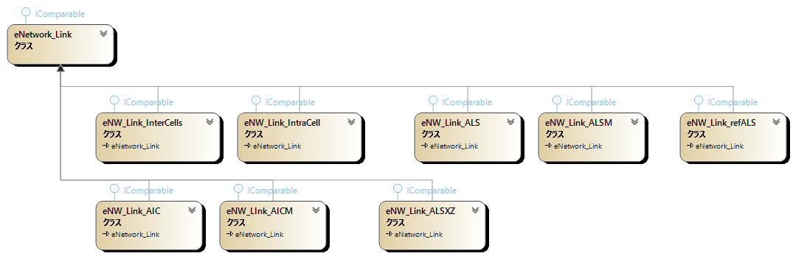

This section provides an overview of GNPX v5 link notation, classes, algorithms, etc.
Accurate understanding requires reading the GNPX code.
Please note that i are still in the process of sorting things out and the consistency is not yet complete.
eNetwork
- The mechanism for connecting links is defined as "eNetwork(eNW)".
- Link: Used as a name to summarize inter-cell links, intra-cell links, ALS links, AIC links, etc.
(1) ULogical_Node
This is a basic element class in eNetwork. It has the attributes of "position, digit, and status (affirmative or negative)" of cells and cell groups.
(2) eNetwork_Node
- It has a cell, a group of cells, and an attribute value.
- A state attribute value can be positive(+) or negative(-). (Until Ver4.0, it was written as true and false, but this will change.)
- Multiple cells such as ALS and AIC can be treated as one set.
- Nodes have information about the links they connect.
The state attribute of a link end node can be positive, negative, or both.
If the state attribute of a node is both affirmative and negative, it is a contradiction and the underlying proposition is false.
(3) eNetwork_Link
- The eNetwork_Link class has a origin node, destination node,
next connection node, and common attributes for assembling a network.
- Each linked derived class has an underlying Locked pattern.
It is made by adding elements to this to make it Almost.
eNW_Link_InterCells, eNW_Link_IntraCell, eNW_Link_ALS, eNW_Link_ALSM,
eNW_Link_refALS, eNW_Link_AIC, eNW_Link_AICM, eNW_Link_ALSXZ, ... (It will be expanded in the future. Probably.)

(4) Implementation of nodes and links in GNPX v5
During the analysis of a Sudoku position, nodes dynamically manage attribute values
When a link is connected to a confirmed node,
the state attribute value of the terminal node is confirmed (+/-) and the node is registered in the list (peNetwork_NodeList).
When searching a network, if the state attribute value (+/-) of a node is determined by multiple routes,
the search beyond that point can be omitted if the attribute values are the same.
If they do not match, it is a contradiction and the premised proposition is false.
In order to handle multiple routes,
we adopted a method in which the nodes at both ends of the link do not have state attributes,
and the state attributes of the network nodes are managed separately.
(This is how to implement in GNPX. There are other ways.)
(5) network search
Once the state attributes of the starting node are determined,
we can extend the links that connect to it, and then extend them further... to create a network.
This network may form Locked. In other words, it is a Sudoku analysis algorithm.
There are two types of network exploration: radial and loop.
- Radial network search algorithm:
- For all links connecting to the starting node, find the state attributes of the terminal node.
- If the node is not registered, register it in the node and state attributes. Also, register it in the next search queue.
- If the node is registered and the state attributes match, do nothing.
- If the node is already registered and the state attributes do not match, the process ends with the discovery of an "inconsistency".
- If the target node is reached or if the Queue is empty, exit.
If not, take the node from the Queue and repeat from 1.